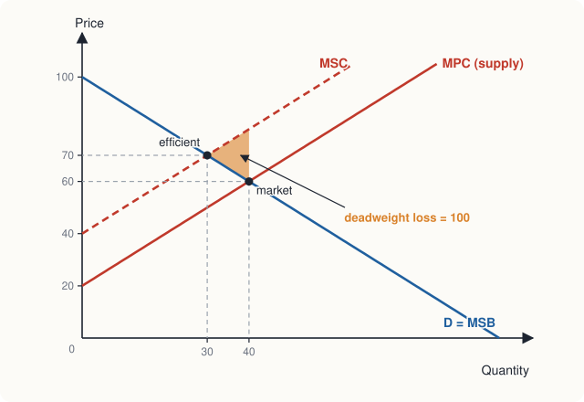
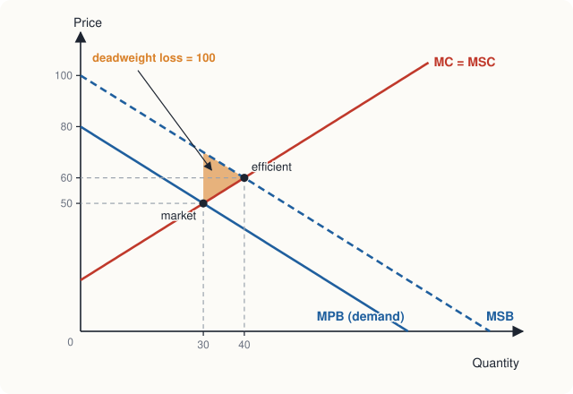

Chapter 12: Market Failure¶
Externalities, public goods, common resources and asymmetric information
Learning outcomes
After studying this chapter you should be able to:
- Explain what market failure is and name its main sources.
- Distinguish private and social costs and benefits, and show the deadweight loss of a negative or positive externality.
- Compare corrective taxes and subsidies, regulation, tradable permits and private bargaining as remedies for externalities, and state the Coase theorem.
- Classify goods by rivalry and excludability, and explain the free-rider problem and the efficient quantity of a public good.
- Explain the tragedy of the commons and ways of avoiding it.
- Explain adverse selection, moral hazard, signalling and screening.
12.1 When markets fail¶
Chapter 4 showed that a competitive market, left to itself, produces the quantity at which total surplus is as large as possible. Chapter 8 showed that competition leads firms to produce at the lowest cost and to price at marginal cost. These are powerful results, but they rest on assumptions. When the assumptions fail, the market outcome may be inefficient: too much of some goods, too little of others. Economists call this market failure.
Market power, studied in Chapters 9 and 10, is one source of market failure. This chapter studies four others.
- Externalities: costs or benefits that fall on people outside the transaction.
- Public goods: goods that cannot easily be sold to individuals, because people cannot be excluded from using them.
- Common resources: resources that anyone can use but whose use by one person reduces what is left for others.
- Asymmetric information: one side of a transaction knows more than the other.
Market failure is a reason why governments may improve on the market. It is not a guarantee that they will: Section 12.8 discusses government failure.
12.2 Negative externalities¶
An externality is a cost or benefit of an activity that falls on people who are not party to the transaction and is not reflected in the price. A factory that discharges waste into a river imposes costs on fishermen and on villages downstream that use the water. A driver adds to congestion and air pollution in a city. Someone who plays loud music late at night disturbs the neighbours. These are negative externalities (or external costs).
The key distinction is between private and social cost.
- Marginal private cost (MPC) is the cost borne by the producer of one more unit: labour, materials, energy.
- Marginal external cost (MEC) is the cost of one more unit imposed on others.
- Marginal social cost (MSC) is the full cost to society: \(MSC = MPC + MEC\).
Producers base their decisions on private costs, so the market supply curve is the MPC curve. When there is a negative externality, the market ignores part of the cost and produces too much.
Example 12.1 A polluting industry
The demand for a chemical is \(P = 100 - Q\), which also measures its marginal social benefit, since there are no external benefits. The industry's supply (marginal private cost) is \(P = 20 + Q\). Each unit produced causes pollution damage of ₹20 to people living nearby. Find the market outcome, the efficient outcome and the deadweight loss.
Solution. Market. \(100 - Q = 20 + Q\) gives \(Q = 40\) and \(P = 60\).
Efficient. The marginal social cost is \(MSC = 20 + Q + 20 = 40 + Q\). Setting \(MSB = MSC\): \(100 - Q = 40 + Q\) gives \(Q = 30\) and \(P = 70\).
Deadweight loss. For each unit from 30 to 40, the cost to society (MSC) exceeds the benefit (MSB). The loss is the triangle between MSC and demand from 30 to 40: at \(Q = 40\), \(MSC = 80\) and \(MSB = 60\), so

12.3 Positive externalities¶
A positive externality (or external benefit) is a benefit that falls on others. When a person is vaccinated against an infectious disease, she protects not only herself but also those she might otherwise have infected. Education benefits the student, but also the society that gains from an informed citizen and from ideas she may produce. A homeowner who keeps an attractive garden pleases the neighbours. Research by one firm often spreads to others.
- Marginal private benefit (MPB) is the benefit to the buyer, which is what the demand curve measures.
- Marginal external benefit (MEB) is the benefit to others.
- Marginal social benefit (MSB) \(= MPB + MEB\).
Buyers base their decisions on private benefits, so the market produces too little of a good with external benefits.
Example 12.2 Vaccination
The private demand for a vaccine is \(P = 80 - Q\) and its marginal cost of supply is \(P = 20 + Q\) (no external costs). Each vaccination gives others an external benefit of ₹20. Find the market and efficient quantities, the deadweight loss, and a subsidy that would correct the problem.
Solution. Market. \(80 - Q = 20 + Q\) gives \(Q = 30\), \(P = 50\).
Efficient. \(MSB = 100 - Q\). Setting \(MSB = MC\): \(100 - Q = 20 + Q\) gives \(Q = 40\).
Deadweight loss. Units 30 to 40 are worth more to society than they cost but are not produced: \(DWL = \tfrac{1}{2} \times 10 \times (70 - 50) = 100\), where 70 and 50 are MSB and MC at \(Q = 30\).
Subsidy. A subsidy of ₹20 per vaccination, equal to the external benefit, raises buyers' effective willingness to pay to \(100 - Q\). Output rises to 40; sellers receive ₹60 and buyers pay \(60 - 20 = 40\) rupees.

This is why governments subsidise or provide vaccinations, primary education and basic research, and why some (such as childhood vaccinations or schooling up to a certain age) are made compulsory or free.
12.4 Remedies for externalities¶
The problem with an externality is that the decision-maker does not bear the full cost or receive the full benefit of her actions. The remedies all aim to make her take the externality into account: to internalise it.
Corrective taxes and subsidies¶
The economist Arthur Pigou proposed in the 1920s that a negative externality be corrected by a tax equal to the marginal external cost, now called a Pigouvian tax. In Example 12.1, a tax of ₹20 per unit shifts the supply curve up to \(P = 40 + Q\), which is the MSC curve, and the market produces the efficient 30 units. Unlike the taxes of Chapter 4, which caused a deadweight loss, a correctly set Pigouvian tax removes a deadweight loss, and raises revenue as well. Taxes on fuel, on tobacco and on carbon emissions are partly justified in this way. Similarly, a Pigouvian subsidy equal to the marginal external benefit corrects a positive externality, as in Example 12.2.
The difficulty is that the government must estimate the external cost or benefit, which is often hard to measure.
Regulation¶
The government can instead regulate the activity directly: set limits on emissions, require certain technologies (such as catalytic converters in cars or filters in factory chimneys), ban particular substances, or restrict activities to certain places and times. Regulation is simple to understand and enforce in some cases, and appropriate where the damage is very large or where a substance is so dangerous that it should not be used at all. But a uniform rule that requires every firm to cut pollution by the same amount ignores the fact that some firms can cut pollution much more cheaply than others.
Tradable permits¶
A tradable permit system (also called cap and trade) combines the certainty of regulation with the efficiency of prices. The government sets a total limit (the cap) on emissions, issues permits adding up to that limit, and allows firms to buy and sell them. Firms that can cut pollution cheaply do so and sell their spare permits; firms for which cutting is expensive buy permits instead.
Example 12.3 Permits versus a uniform standard
Two factories each emit 100 tonnes of a pollutant a year. The government wants total emissions cut by 100 tonnes. Factory A can cut emissions at a cost of ₹20 per tonne; factory B at ₹50 per tonne. Compare (a) a rule that each must cut 50 tonnes with (b) giving each permits for 50 tonnes and allowing trade.
Solution. (a) Each cuts 50 tonnes. Cost \(= 50 \times 20 + 50 \times 50 = 1{,}000 + 2{,}500 = 3{,}500\) rupees.
(b) B would rather pay anything less than ₹50 a tonne than cut its own emissions; A would sell a permit for anything more than ₹20, since it can cut a tonne for ₹20. So B buys A's 50 permits at a price between ₹20 and ₹50, and A cuts 100 tonnes while B cuts none. Total cost of cutting \(= 100 \times 20 = 2{,}000\) rupees.
Both systems achieve the same cut of 100 tonnes, but permits do it at ₹1,500 less, because the cutting is done by the firm that can do it most cheaply. The payment for permits is a transfer from B to A; it is not a cost to society.
Systems of this kind have been used, for example, for sulphur dioxide emissions in the United States and for carbon emissions in the European Union.
Private bargaining and the Coase theorem¶
Ronald Coase argued in 1960 that externalities need not always require government action. Suppose a factory's smoke damages a neighbouring laundry by ₹5 lakh a year, and a filter that would stop the smoke costs ₹3 lakh a year.
- If the laundry has the right to clean air, the factory must either install the filter (cost ₹3 lakh) or compensate the laundry (₹5 lakh). It installs the filter.
- If the factory has the right to pollute, the laundry can offer to pay the factory to install the filter. It would pay up to ₹5 lakh to avoid ₹5 lakh of damage, and the factory would accept anything over ₹3 lakh. They agree, and the filter is installed.
Either way, the efficient outcome (the filter) is reached; only the distribution of the cost differs. If the filter cost ₹7 lakh instead, it would not be installed under either assignment of rights, which is also efficient, since the filter would cost more than the damage it prevents.
This is the Coase theorem: if property rights are clearly defined and the parties can bargain at low cost, they will reach the efficient outcome, whoever holds the rights. Its practical lesson is that clear property rights and low transaction costs can solve some externality problems privately. Its limitation is equally important: when many people are affected (a whole city breathing polluted air), bargaining is too costly to organise, and government action is needed.
12.5 Public goods¶
Goods can be classified by two properties.
- A good is excludable if people who do not pay can be prevented from using it. A shirt is excludable; a fireworks display seen from the street is not.
- A good is rival in consumption if one person's use reduces the amount available to others. A plate of food is rival; a radio broadcast is not, since one more listener does not reduce what others hear.
| Rival | Non-rival | |
|---|---|---|
| Excludable | Private goods: food, clothes, phones, a ride in a taxi | Club goods: cable television, a toll road that is not congested, software |
| Non-excludable | Common resources: fish in the sea, groundwater, a crowded free road | Public goods: national defence, street lighting, flood control, basic scientific knowledge |
Table 12.1. Four types of goods.
A public good is both non-rival and non-excludable. National defence protects everyone in a country; protecting one more person costs nothing extra, and no one can be excluded from protection. A lighthouse guides every ship that passes. Street lighting helps everyone who walks down the street.
The free-rider problem¶
Because no one can be excluded from a public good, each person has an incentive to let others pay for it and enjoy it for free. Such a person is a free rider. If everyone reasons this way, a private firm cannot sell the good, since few will pay for something they get anyway. So the market provides too little of a public good, or none at all, even when its benefits to society far exceed its cost. This is why public goods are usually provided by governments and paid for by taxes.
How much of a public good?¶
Since a public good is non-rival, every person consumes the same quantity of it. The marginal social benefit of one more unit is therefore the sum of the marginal benefits to all the people who enjoy it. (For a private good, by contrast, we add quantities at each price, Chapter 2.) The efficient quantity is where this sum equals the marginal cost.
Example 12.4 Street lamps
Three households share a lane. The marginal benefit of the \(n\)-th street lamp is \(50 - 5n\) rupees a month to household A, \(40 - 5n\) to household B and \(30 - 5n\) to household C. Each lamp costs ₹60 a month to run. How many lamps should there be?
Solution. The marginal social benefit of the \(n\)-th lamp is the sum:
Set \(MSB = MC\): \(120 - 15n = 60\), so \(n = 4\). At \(n = 4\), the three households value the fourth lamp at ₹30, ₹20 and ₹10, which together just cover its cost of ₹60.
No household would pay for even one lamp on its own: household A, which values lamps most, values the first at only ₹45, less than its cost. Without some way to share the cost, the lane would stay dark, although four lamps are worth more than they cost.
12.6 Common resources and the tragedy of the commons¶
Common resources are rival but non-excludable. Anyone can fish in the open sea, pump groundwater from beneath their land, graze animals on a village common or drive on a free public road; but each fish caught, each litre pumped and each car on the road leaves less for everyone else. Each user bears only part of the cost of her use; the rest falls on other users. The result is overuse: fish stocks collapse, water tables fall, pastures are overgrazed and roads become congested. The biologist Garrett Hardin called this the tragedy of the commons in 1968. It is a negative externality, and also a prisoner's dilemma (Chapter 10): each user is better off taking more, whatever the others do, but all are worse off if everyone does.
Remedies include:
- regulation: fishing seasons and quotas, limits on the number of boats, licences for tube wells;
- pricing: charges for road use in congested city centres, or for water;
- property rights: dividing the resource, or giving individuals transferable quotas, so that users bear the cost of overuse themselves;
- community management: the political scientist Elinor Ostrom, who shared the Nobel prize in economics in 2009, documented many communities around the world (forest users, irrigation groups, fishing villages) that have managed common resources successfully for long periods through rules they made and enforced themselves.
12.7 Asymmetric information¶
Markets work well when buyers and sellers are well informed. Often one side knows more than the other: the seller of a used car knows whether it has hidden faults; a person buying health insurance knows more about her health than the insurer; a worker knows how hard she is working, and her employer may not. This is asymmetric information, and it causes two main problems.
Adverse selection¶
Adverse selection arises when one side cannot observe the quality or type of what is being traded before the transaction. George Akerlof's famous article "The Market for 'Lemons'" (1970) used used cars to explain it.
Example 12.5 The market for lemons
Half the used cars of a certain model are good and half are "lemons" with hidden faults. Owners know which they have; buyers cannot tell. A good car is worth ₹4 lakh to a buyer and ₹3.5 lakh to its owner; a lemon is worth ₹2 lakh to a buyer and ₹1.5 lakh to its owner. What happens?
Solution. With full information, every car would be sold, since each is worth more to a buyer than to its owner: good cars at a price between ₹3.5 and ₹4 lakh, lemons between ₹1.5 and ₹2 lakh.
Without information, a buyer knows only that a car is equally likely to be good or bad, so she will pay at most the average value, \(\tfrac{1}{2}(4) + \tfrac{1}{2}(2) = 3\) lakh rupees. But owners of good cars will not sell for ₹3 lakh, since they value their cars at ₹3.5 lakh. They withdraw. Buyers realise that only lemons are left and offer at most ₹2 lakh. Only lemons are traded.
The good cars, each worth ₹0.5 lakh more to a buyer than to its owner, are never sold. Bad quality drives good quality out of the market.
The same problem affects insurance. If an insurer charges a premium based on the average risk, people with low risk find it too expensive and do not buy, while those with high risk do. The insurer's customers are riskier than average, so it must raise the premium, which drives out more of the low-risk customers. In the extreme the market can disappear. This is one reason why health insurance is often provided through employers (so that the insured are a broad group, not self-selected) or made compulsory.
Markets and institutions have developed ways of reducing adverse selection.
- Signalling: the informed side takes a costly action that the uninformed side can observe and that only a high-quality type would find worthwhile. A warranty on a used car signals that the seller believes it is good, since offering a warranty on a lemon would be expensive. Michael Spence argued that education can act partly as a signal of ability to employers.
- Screening: the uninformed side designs choices that make the informed side reveal its type. Insurers offer a choice between a low premium with a large deductible (attractive to low-risk customers) and a high premium with full cover (attractive to high-risk ones).
- Reputation and certification: brands, seller ratings on online platforms, independent inspections, and licences for doctors and lawyers give buyers information about quality.
Moral hazard¶
Moral hazard arises when one side cannot observe the actions of the other after the transaction, and the other side has less incentive to act carefully because it does not bear the full consequences. A person with full insurance against theft may be less careful about locking the door. A borrower who can walk away from a loan may take bigger risks with the money. A manager paid a fixed salary may work less hard than the owners would like.
The general situation, in which one party (the principal) wants another (the agent) to act in the principal's interest but cannot fully observe the agent's actions, is called the principal-agent problem. Remedies try to align the agent's incentives with the principal's:
- insurance with deductibles and co-payments, so that the insured bears part of any loss;
- collateral for loans, so that the borrower has something to lose;
- pay linked to performance, such as commissions, bonuses or shares in the firm;
- monitoring, such as inspections and audits.
Common mistake
Keep the two problems apart by asking when the information is missing. Adverse selection is about hidden characteristics before the deal (who chooses to buy insurance). Moral hazard is about hidden actions after the deal (how the insured behave once insured).
12.8 Government failure¶
Market failure shows that the market outcome may be inefficient. It does not show that government action will make things better. Governments can fail too, for several reasons.
- Limited information. To set the right Pigouvian tax or provide the right quantity of a public good, the government must know costs and benefits that are hard to measure.
- Incentives of politicians and officials. Decisions may be shaped by elections, lobbying by organised groups, or the interests of the officials themselves, rather than by efficiency.
- Unintended consequences. As with price controls (Chapter 4), well-meant policies can change behaviour in ways that were not foreseen.
- Costs of administration and enforcement, which can exceed the benefits of a small correction.
The practical question is therefore not "market or government?" but which combination of markets, regulation, taxes, property rights and community action gives the best result in each case, given the imperfections of all of them.
12.9 Summary¶
- Market failure occurs when a market allocates resources inefficiently. Sources include market power, externalities, public goods, common resources and asymmetric information.
- A negative externality makes marginal social cost exceed marginal private cost; the market overproduces. A positive externality makes marginal social benefit exceed marginal private benefit; the market underproduces. Either causes a deadweight loss.
- Remedies: Pigouvian taxes and subsidies equal to the external cost or benefit; regulation; tradable permits, which achieve a given cut in pollution at the lowest cost; and private bargaining, which by the Coase theorem reaches efficiency when property rights are clear and transaction costs are low.
- Public goods are non-rival and non-excludable. The free-rider problem means the market provides too little. The efficient quantity is where the sum of individual marginal benefits equals marginal cost.
- Common resources are rival but non-excludable and tend to be overused: the tragedy of the commons.
- Asymmetric information leads to adverse selection (hidden characteristics, as in the market for lemons) and moral hazard (hidden actions). Signalling, screening, reputation, deductibles and incentive pay are responses.
- Governments can also fail; good policy weighs the imperfections of markets against those of government.
12.10 Exercises¶
Exercise 1
Classify each as a negative or positive externality, and say whether the market produces too much or too little of the activity: (a) a neighbour's dog barking at night; (b) a farmer keeping bees that pollinate nearby orchards; (c) burning crop stubble; (d) a person getting a flu vaccination.
Answer
(a) Negative; too much barking (dog-keeping without control). (b) Positive; too little beekeeping. (c) Negative (smoke harms others' health); too much burning. (d) Positive; too few vaccinations.
Exercise 2
The demand for a good is \(P = 120 - 2Q\) and its marginal private cost is \(P = 30 + Q\). Production causes an external cost of ₹15 per unit. Find the market quantity, the efficient quantity, the deadweight loss and the Pigouvian tax.
Answer
Market: \(120 - 2Q = 30 + Q\) gives \(Q = 30\). Efficient: \(120 - 2Q = 45 + Q\) gives \(Q = 25\). At \(Q = 30\): \(MSC = 75\), \(MSB = 60\). \(DWL = \tfrac{1}{2} \times 5 \times 15 =\) ₹37.50. Pigouvian tax ₹15 per unit.
Exercise 3
Two firms must together cut emissions by 60 tonnes. Firm X can cut at ₹10 per tonne (up to 60 tonnes) and firm Y at ₹40 per tonne. Find the cost if each must cut 30 tonnes, and the cost under tradable permits.
Answer
Uniform rule: \(30 \times 10 + 30 \times 40 =\) ₹1,500. Permits: X does all the cutting, \(60 \times 10 =\) ₹600, and Y buys permits from X at a price between ₹10 and ₹40. Permits save ₹900.
Exercise 4
Classify each good as private, public, club or common resource: (a) a cup of tea; (b) a public park that is rarely crowded; (c) fish in a river open to all; (d) a subscription video service; (e) a flood embankment protecting a town.
Answer
(a) Private (rival and excludable). (b) Close to a public good (non-rival when uncrowded, and hard to exclude), though it becomes a common resource when crowded. (c) Common resource. (d) Club good (excludable, non-rival). (e) Public good.
Exercise 5
Two residents value a neighbourhood security guard. The marginal benefit of the \(h\)-th hour of patrol per night is \(100 - 10h\) to resident 1 and \(80 - 10h\) to resident 2. An hour of patrol costs ₹60. Find the efficient number of hours. Would either resident hire a guard alone for that many hours?
Answer
\(MSB = 180 - 20h = 60\) gives \(h = 6\) hours. Alone, resident 1 would hire up to where \(100 - 10h = 60\), i.e. 4 hours, and resident 2 up to \(80 - 10h = 60\), i.e. 2 hours. Neither would hire 6 hours alone, and each has an incentive to free ride on the other.
Exercise 6
Is each an example of adverse selection or moral hazard? (a) After buying full car insurance, a driver parks in unsafe places. (b) People who know they are likely to need expensive dental work are the most eager to buy dental insurance. (c) A salesperson on a fixed salary makes few calls when not supervised.
Answer
(a) Moral hazard (hidden action after the deal). (b) Adverse selection (hidden characteristic before the deal). (c) Moral hazard (a principal-agent problem).
12.11 Quiz¶
Check your understanding of Chapter 12
Exercise 1
When production causes a negative externality, the competitive market
- produces the efficient quantity
- produces more than the efficient quantity
- produces less than the efficient quantity
- produces nothing
Answer
produces more than the efficient quantity
Exercise 2
A Pigouvian tax is set equal to
- the price of the good
- the marginal external cost at the efficient output
- the producer's profit
- average total cost
Answer
the marginal external cost at the efficient output
Exercise 3
The Coase theorem says that, when property rights are clear and bargaining is cheap,
- the government must tax pollution
- the efficient outcome is reached whoever holds the rights
- polluters always pay
- externalities cannot be solved privately
Answer
the efficient outcome is reached whoever holds the rights
Exercise 4
A public good is
- rival and excludable
- rival and non-excludable
- non-rival and non-excludable
- any good provided by the government
Answer
non-rival and non-excludable
Exercise 5
Three people value one more streetlight at ₹25, ₹15 and ₹10. What is its marginal social benefit, in rupees?
Answer
50 / ₹50
Exercise 6
Overfishing of the open sea is an example of
- the free-rider problem for a public good
- the tragedy of the commons
- moral hazard
- price discrimination
Answer
the tragedy of the commons
Exercise 7
A seller offers a one-year warranty on a used car to show it is not a lemon. This is an example of
- screening
- signalling
- moral hazard
- a Pigouvian subsidy
Answer
signalling